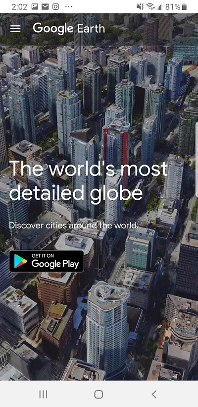

White space and clean design
Turbo Tax Website
This sight is very clean and simple to see what is going on. There is ample space between sections and teh graphics that are displayed on the screen into the next page.
The page is not cluttered with content. I found it very easy to follow and it makes the message very clear to the user.
Hick's Law
Google Earth Website Information
Visual Hierarchy
UAF Alaska Earthquake Center Website
Information